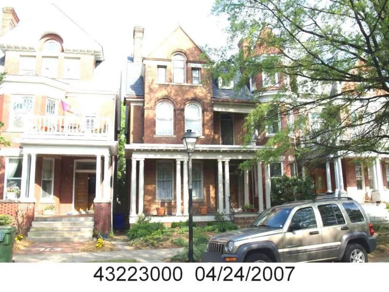
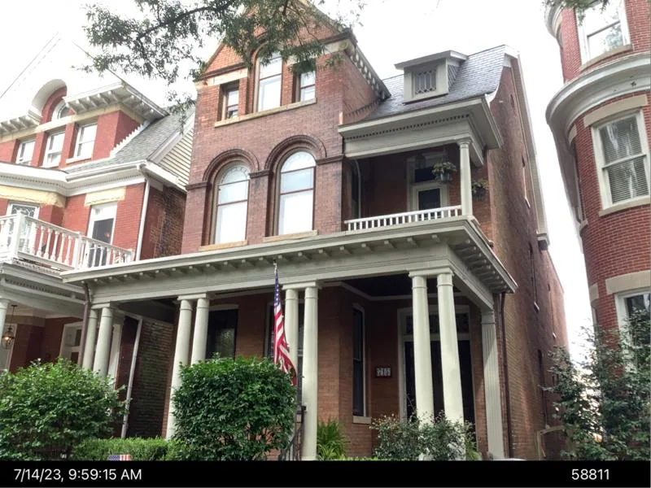
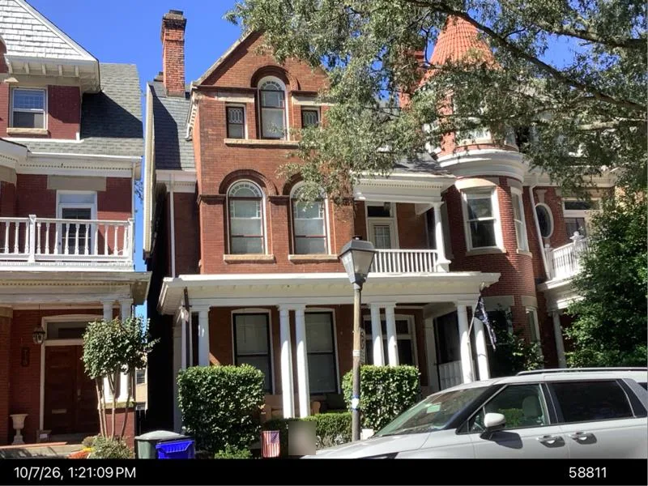
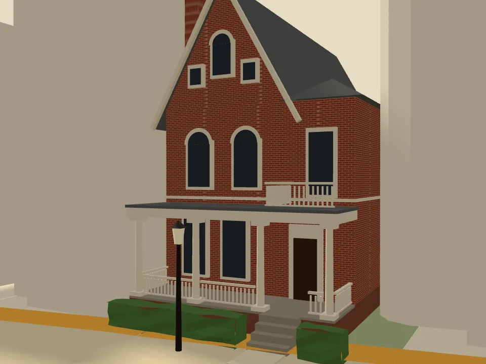
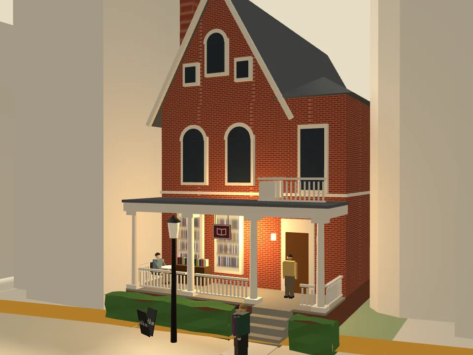

The house
- Built
- 1888
- Use today
- Single-family house
- Living space
- 3,759 sq ft
- Lot
- 3,063 sq ft
- Zoning
- HC-G2
- Street
- Colonial Avenue, classed arterial/collector
The City's assessor has photographed 715 Colonial three times, in 2007, 2023 and October 2026. It is the same house in all three: red brick, a steep front gable over two round-headed windows, a porch across the front on white columns, a balcony on the porch roof, boxwood either side of the walk.



Photos: City of Norfolk Real Estate Assessor, from the property card for this parcel. We host copies with license plates and a yard sign blurred, as our open letter describes. Facts from the City's FY2026 assessment on Norfolk Open Data.
What the porch could hold
We built the house by hand for the parcel explorer, from the City's building footprint and these photos. Pick a use and the porch fills. Tables, lanterns, a sign hung from the porch beam, lettering on the two front windows. The house itself doesn't change. The porch stays open, and the doors and windows stay where they are, as the Architectural Review Board's design guidelines ask of a house.



Open 715 Colonial in the explorer →
The rule
715 Colonial is in HC-G2. Table 3.6.11 of the zoning ordinance leaves restaurants, retail goods establishments and offices blank in HC-G2, and a blank means prohibited. No permit can authorize them, at any price. Across the district line in HC-G3, the same table allows all three: offices by right, and restaurants and retail by right or with a conditional use permit.
The plan
NFK2050, the comprehensive plan City Council adopted on December 9, 2025, puts HC-G2 in its Sustain – Traditional place type. For that place type it lists "Commercial/retail, small-scale office" as a secondary land use (p. 92), and it says where secondary uses belong: "The Secondary, non-residential uses envisioned for the Sustain areas are appropriate primarily along arterials and collector streets, preserving the residential character of the neighborhood interiors" (p. 69).
The City's own street layer classes Colonial Avenue in front of 715 as an arterial or collector street. This is the frontage that passage describes. The caveat is that the plan encourages small-scale retail "at key nodes or intersections, with consistent street frontage" (p. 93), and 715 is mid-block.
What it would take
Policy Brief No. 1 proposes amending Table 3.6.11 to permit six small uses by right in HC-G2, under performance standards. As drafted, the amendment reaches the interior blocks too, which the plan says to keep residential. On a block like this one, the plan and the amendment agree.
This is an illustration, not a proposal for this property. We haven't spoken with the people who live here, and nothing on this page says they want a café on their porch. It shows what the rule rules out, on a house the City has photographed for nineteen years.
SOURCES: City of Norfolk Real Estate Assessor, FY2026 assessment for parcel 43223000 (effective July 1, 2025), via Norfolk Open Data, and street photos dated April 24, 2007, July 14, 2023 and October 7, 2026 (gisshare.norfolk.gov); City of Norfolk building footprints, parcels, zoning and street centerlines, OpenData GIS services (the street layer's right-of-way class); Norfolk Zoning Ordinance, Table 3.6.11 and § 4.2; NFK2050 Comprehensive Plan, adopted December 9, 2025 (Ordinance No. 50201), pp. 69, 92, 93; Norfolk Historic District Design Guidelines, adopted by the Architectural Review Board May 26, 2026. All checked November 2026.